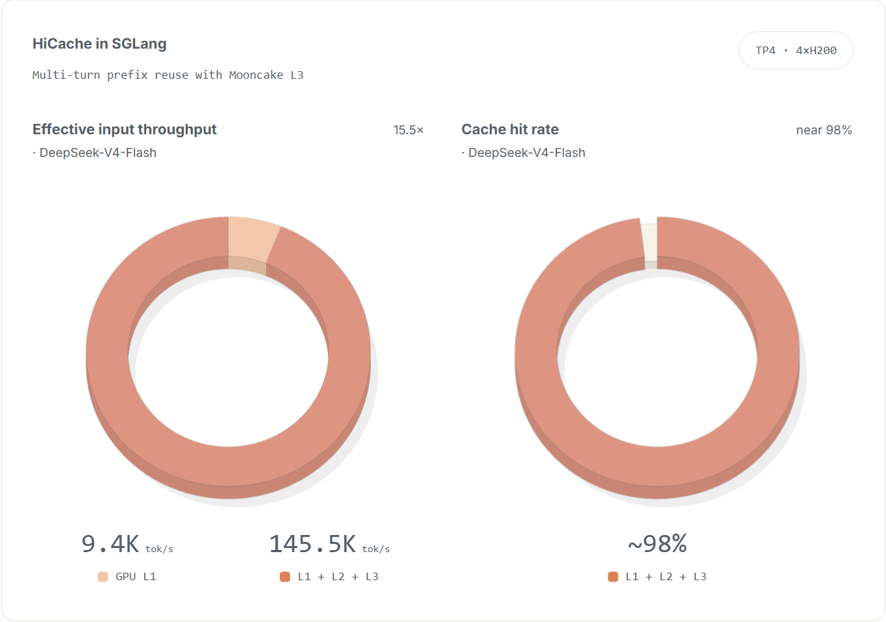
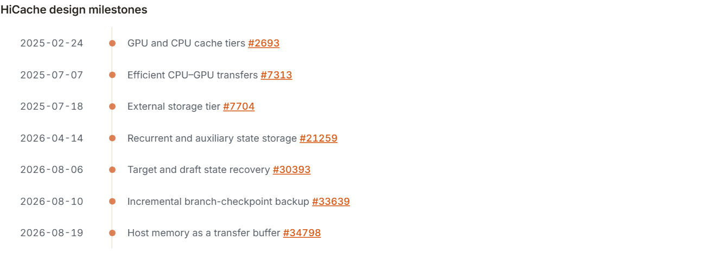
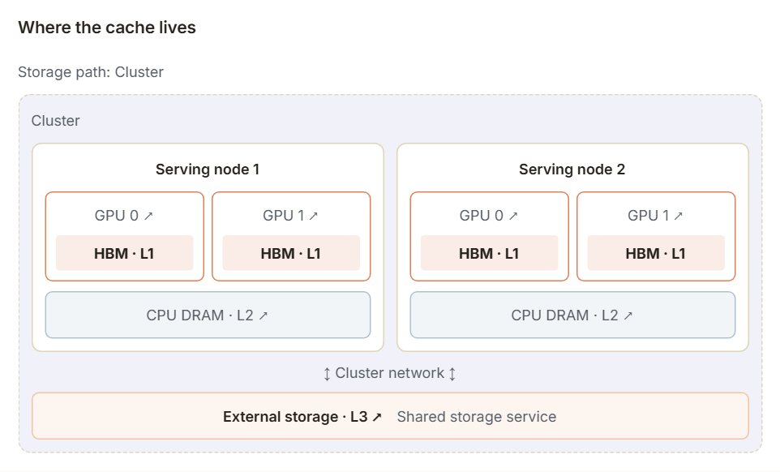
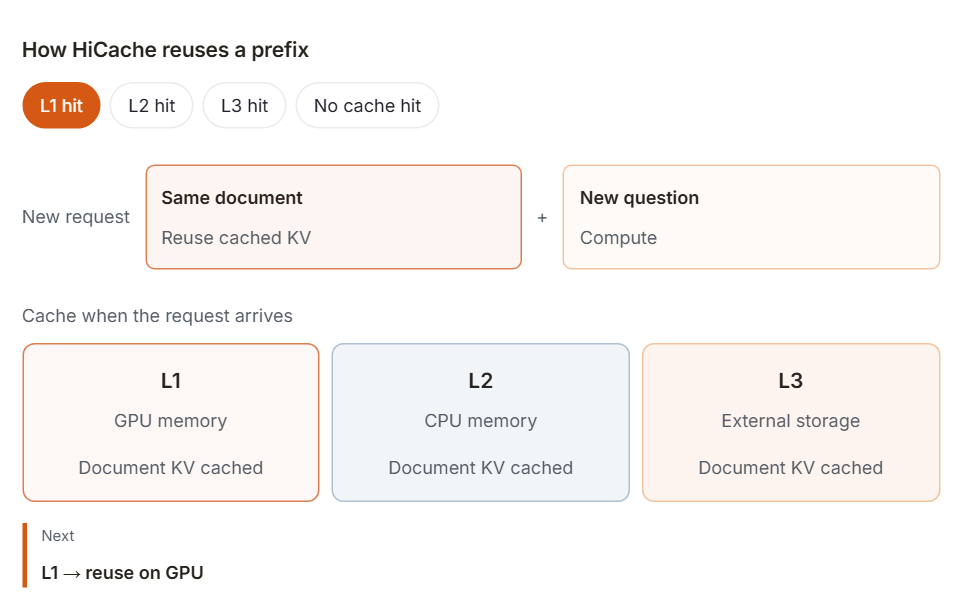
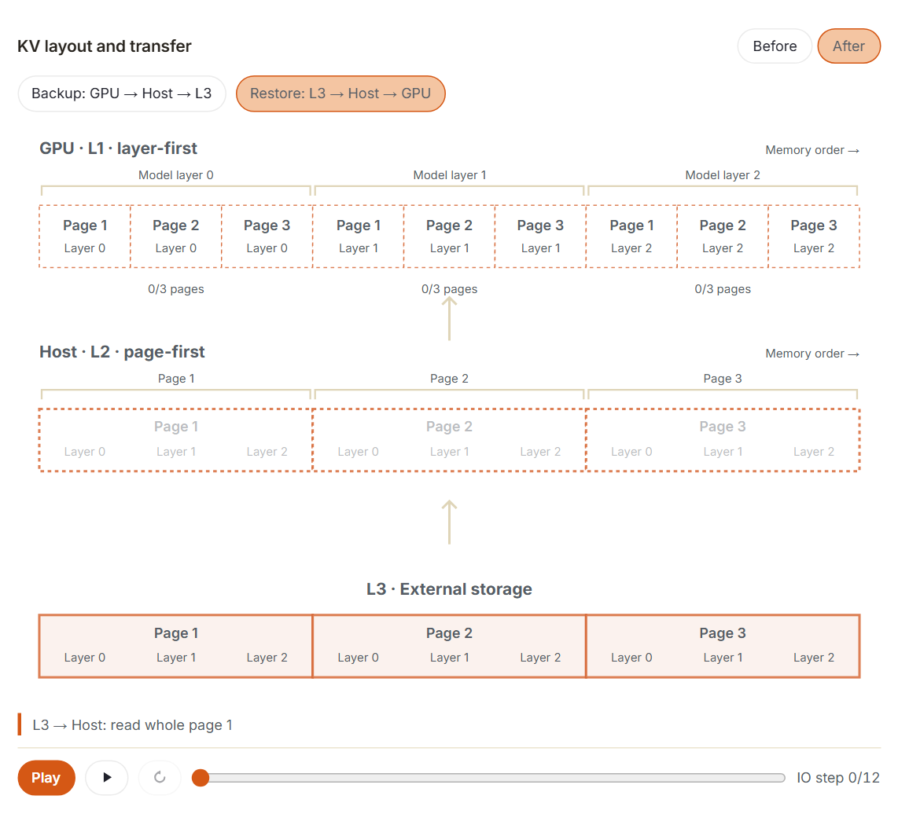
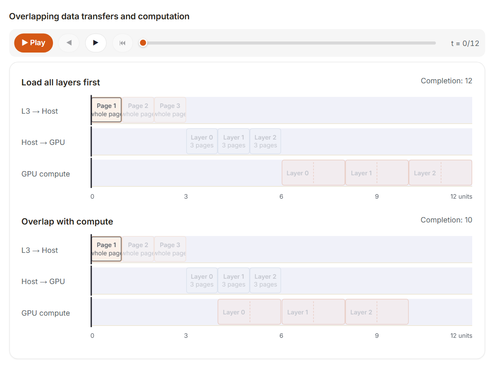
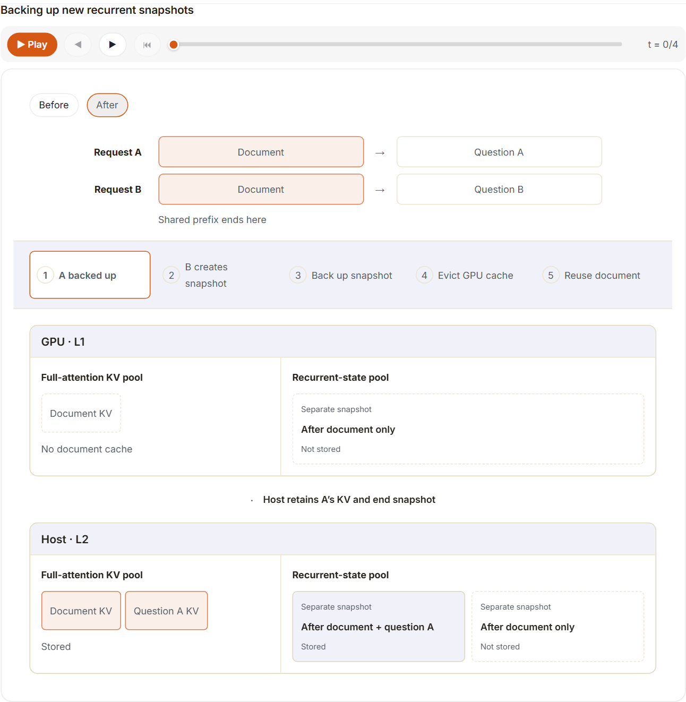
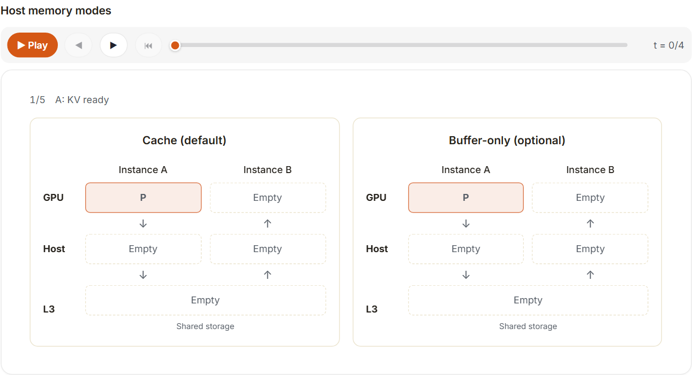
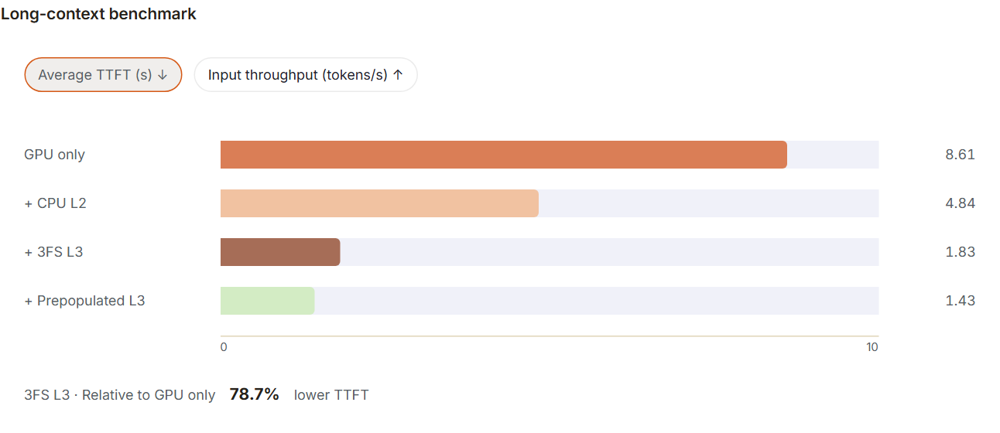
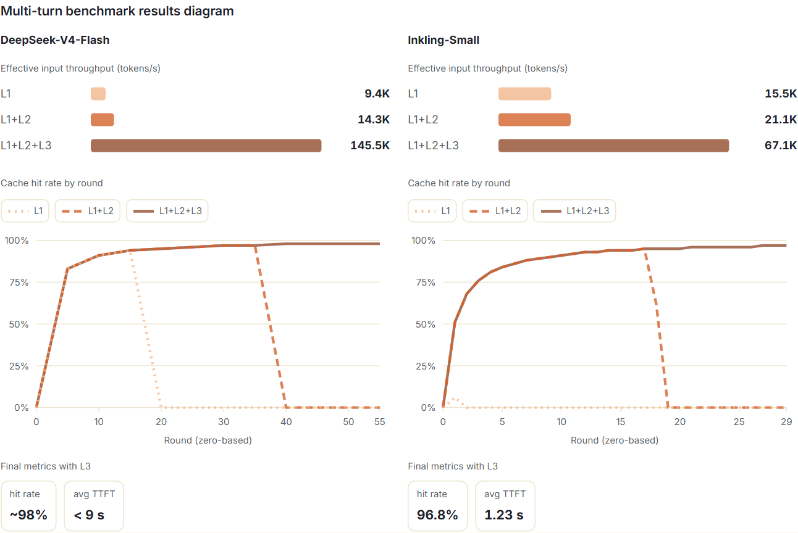

SGLang 重用缓存的前缀以避免重复预填充，但 GPU 内存无法保留每个不断增长的对话。本文介绍了 SGLang HiCache 以及它如何将缓存扩展到 CPU 内存和外部存储。在 DeepSeek-V4-Flash 多轮基准测试中，添加 Mooncake L3 可使有效输入吞吐量达到仅 GPU 基准的 15.5 倍，缓存命中率接近 98%。

背景
模型会为读取的 token 计算键和值（KV）。生成过程中，注意力使用这些 KV 回顾上下文。当另一个请求以相同的 token 前缀开始时，SGLang 可以重用已有 KV，只计算新的后缀，从而减少预填充工作并缩短首 token 时间（TTFT）。
GPU 内存的容量限制了重用。对话不断增长，更多的客户带来更多的历史。一旦缓存填满，前缀可能会在下一个请求需要它之前被淘汰。 SGLang 的 HiCache 将这些前缀保留在更大的内存层中。为了提供这种能力，恢复前缀的成本必须低于重新计算它，并且恢复的状态必须足以从该前缀继续模型。
HiCache 首先添加 CPU 内存，然后添加外部存储。后来的工作将恢复扩展到混合模型和草稿状态，并提出了仅使用主机内存作为传输缓冲区的建议。时间线将这些变化置于背景之中；本文的其余部分将讨论这些工作解决的工程问题。

缓存
设计与机制
将每个可重用前缀保留在 GPU 上会与活动请求所需的内存竞争。因此，HiCache 将保留前缀的位置与模型使用前缀的位置分开。 GPU HBM 为 L1，CPU DRAM 为 L2，外部存储为 L3。 GPU 仍然执行注意力；低层缓存保留否则将被丢弃的数据。缓存控制器备份并重新加载该数据。
查看静态备用图

假设两个请求以相同的文档开头，但提出不同的问题。 SGLang 可以重用文档的 KV 并仅计算新问题。 HiRadixTree 匹配共享前缀并跟踪其各级缓存位置； HiCache 在需要时将低层缓存的副本带回 GPU。
查看静态备用图

L1 命中已准备好重复使用。 L2 命中必须加载到 L1 中。 L3 命中必须首先提取到 L2，然后加载到 L1。只有所有三层中缺少的部分需要重新计算。这就是 HiCache 的好处：从 GPU 内存中逐出的前缀如果低层缓存保留它，仍然可以避免重新计算。重用需要相同的前缀标记；仅具有相似的含义是不够的。
工程概览
该层次结构创建了保留和恢复前缀的路径。使该路径有用会带来几个实现问题：
- 内存布局： 默认情况下，GPU 计算按模型层对数据进行分组，而存储 I/O 按页面对数据进行分组。这些布局之间的传输如何保持高效？
- **重叠数据传输和计算：**哪些传输可以与 GPU 计算重叠以防止 GPU 等待？
- **缓存策略：**预取和备份花费时间、带宽和容量。什么时候值得等待或保存另一个副本？
- 混合模型和草稿状态： token 匹配可能会丢失所需的历史记录。哪些内容必须带有前缀才能完成恢复？
- **主机内存：**每个实例都有一个私有L2池。当L3保留历史记录时，主机内存中必须保留多少数据？
- **存储后端：**不同的系统公开不同的 I/O 实现。他们如何共享 HiCache 的调度和恢复机制？
内存布局
此优化处理 GPU 计算和存储 I/O 使用的不同 KV 布局。 GPU 一次处理一个模型层，因此默认情况下其 KV 是按层分组的，以方便访问。外部 L3 存储读取和写入页面：例如，页面 1 包含token 1-4，页面 2 包含token 5-8。
如果主机保持相同的布局，传输会产生许多小副本的开销，如图所示。通过页面优先的主机布局，整个页面可以一次传输到外部 L3 存储，从而减少传输次数及其开销。
HiCache 因此按页对主机 KV 进行分组进行传输。 它会在传输过程中转换布局，如图所示。第 1 页突出显示：之前，它的各个部分占据单独的主机区域；之后，这些数据被连续放置。主机→存储备份可以直接读取该连续区域，而存储→主机恢复可以直接填充它，从而减少开销。
查看静态备用图

在 GPU ↔ 主机 上，SGLang 的 GPU 辅助 I/O 内核可实现标准 cudaMemcpyAsync 路径的传输吞吐量的 3 倍。在主机↔存储上，页面优先布局支持大量连续读取和写入；零拷贝允许存储客户端直接访问主机池中的这些块。页优先和零拷贝共同提供高达 2 倍的主机存储吞吐量。
重叠的数据传输和计算
上一节解释了如何加快传输速度。此优化与 主机 → GPU 缓存 KV 传输 和 **新 token上的 GPU 计算 ** 重叠。我们希望 GPU 在数据到达时进行计算，而不是等待传输。因此，HiCache 在第一个模型层的 KV 准备好后立即开始计算，而后面各层的 KV 继续加载。
对于三层模型，首先将文档的第0层 KV 从主机加载到 GPU。然后 GPU 通过第 0 层处理新问题，使用缓存的 KV 来处理文档。同时，传输流加载文档的第一层和第二层 KV。
主机 → GPU 传输可以与计算重叠，因为 KV 可以从主机一次加载一个模型层。一旦第 0 层所需的所有 KV 到达，GPU 就可以计算第 0 层，而后面的层继续加载。每一层只等待自己的 KV，而不是每层。 L2 命中可以直接启动此过程。对于L3命中，所需的 KV 必须首先作为整页读入主机：上述存储布局不提供逐层读取。
查看静态备用图

缓存策略
缓存策略决定何时保存 KV 以及何时等待其加载。这是一个熟悉的权衡：当速度更快时重新计算，并在加载速度更快时加载缓存的数据。保存另一个副本可以为以后的请求提供另一个访问缓存的机会，但现在会消耗带宽和内存。等待更长时间的 KV 可能会避免重新计算，但读取本身需要时间并延迟请求的启动。
预取
假设当请求 B 到达时 GPU 正在处理请求 A。 B需要一个 KV 保存在L3中的文档。当 B 等待调度时，HiCache 可以开始将 B 的 KV 读入 主机，并将该读取与 A 的计算重叠。当轮到 B 时，它可以将 主机 中已有的 KV 加载到 GPU，而不是开始读取存储。
如果 B 已准备好运行但其 L3 读取未完成，则预取策略将决定接下来发生的情况。尽力而为停止等待，重用已经可用的前缀，并重新计算其余的。等待完成让 B 等待读取完成。超时为读取提供了更多时间，直至达到限制，然后继续使用可用的前缀。
等待是否有回报取决于两个因素：读取丢失的 KV 需要多长时间，以及重新计算它需要多长时间。对于较长的文档，短暂的额外等待可能会节省大量的预填充工作。当存储读取速度缓慢时，重新计算可以更快完成。 Prefetch 尝试在请求运行之前完成读取；上述政策处理未完成的事项。该图比较了重新计算成本变化时的这些策略。
查看静态备用图

备份
仅当 KV 较早备份时，稍后的请求才能命中主机内存。 GPU 计算出文档的 KV 后，HiCache 可以将其复制到主机，并在启用 L3 的情况下将其保留在存储中。备份会在低层缓存中添加一个副本。 GPU 副本可以保留，直到被淘汰。因此，相同的前缀 KV 可以在 L1、L2 和 L3 中共存，尽管并非每个前缀总是具有三个副本。复制每个缓存的前缀也会将带宽和内存消耗在没有人再次询问的文档上。
对于 GPU→主机备份，HiCache 提供了三种选择：
| 政策 | 备份时间 | 主要权衡 |
|---|---|---|
| 直写式 | 当 KV 进入缓存时主动将 KV 复制到主机 | 保留更多前缀，提供更多备份流量 |
| 选择性直写 | 使用命中计数来选择主机备份的热前缀 | 在很少重用的前缀上花费更少的带宽 |
| 回写 | 当 KV 即将从 GPU 内存中逐出时，将 KV 备份到 主机 | 推迟复制，并在淘汰时进行备份工作 |
混合模型状态
混合模型除了全注意力 KV，还可能需要滑动窗口 KV 和循环状态快照（检查点）。统一 Radix Cache 检查所需状态是否可用，并确定能够从哪个位置恢复计算。HiCache 会在主机内存和 L3 中备份这些状态，并在需要时恢复到 GPU。
备份新的定期快照
这个问题涉及以循环状态保留历史的层，例如线性注意力和 Mamba。每个 token 到达时，这些层的状态都会变化。检查点会在特定前缀末尾保存状态。全注意力层保留每个 token 的 KV；循环层则不断覆盖状态，因此保存其历史需要额外处理。
假设请求A是“文档+问题A”。主机已经持有其全注意力的 KV 和问题A之后的快照。请求B是“相同的文档+问题B”。在此示例中，处理 B 在文档末尾、任一问题之前创建一个快照。 A 的现有快照包含问题 A，因此它无法替换此新文档快照。
之前：新节点触发备份。 插入流程在添加新的缓存节点时启动备份。在执行过程中，主机 中已经存在全注意力 KV 的节点将被视为已备份并被跳过。因此，稍后为现有前缀创建的循环快照可以保留在 GPU 上，而无需将该快照单独备份到主机的路径。
之后：现有前缀上的新快照也会触发备份。 在直写路径上，SGLang 检查前缀的循环快照：如果它存在于 GPU 上但没有主机副本，则会安排单独的备份。仅复制丢失的快照；现有的 KV 和快照保持不变。 GPU 淘汰后，可以从主机恢复快照，从而减少重新计算。
A题和B题末尾的快照也可以单独保留，以继续各自的历史。此处添加的快照位于共享文档的末尾：它允许稍后的请求重用该文档，然后计算自己的问题。
查看静态备用图

直写恢复测试构建新的分支检查点，将它们从 GPU 中逐出，并再次请求共享前缀。 6.4K共享前缀的完全恢复从1/10请求上升到10/10请求；token命中率从15.74%上升至64.00%。每个请求有 6.4K 个共享 token和 3.6K 个新 token，因此 64% 意味着整个共享前缀已恢复。请参阅分支备份测试。
推测解码还需要备份和恢复草稿模型的历史记录。否则，即使目标模型重用了缓存前缀，草稿历史缺失也会降低候选 token 的接受率。
仅缓冲区模式
前面的部分使用 主机 作为二级缓存：KV 保留在内存中，以便后续请求可以直接重用它。实际上，L3 的存储容量远大于 L2。如果启用了 L3，但每个实例的主机内存有限，则 Buffer-only 是一种可选模式。 L3 保留缓存的历史记录，而主机仅保存传输所需的临时数据。
在图中，实例 A 通过将其 KV 从 GPU 复制到 主机，然后写入 L3 来备份前缀 P。写入完成后，这些主机插槽将被释放以供重用。为了恢复 P，实例 B 将其 KV 从 L3 读取到自己的主机缓冲区中，将其加载到 GPU，并在加载完成后释放缓冲区。 GPU ↔ 主机 ↔ L3 传输路径保持不变；变化的是主机在传输后是否保留副本。如图所示，仅缓冲区模式释放该副本。
此模式允许较小的主机池来处理 GPU 和 L3 之间的传输。代价是重用 GPU 内存中缺失的前缀需要 L3 读取，而无法选择保留的 L2 副本，并且从 L3 加载需要更长的时间。在主机内存充足的情况下，缓存模式可以保留可复用的 KV 并减少存储读取。
查看静态备用图

结果
长输入和多轮对话可能超出 GPU 内存容量。以下基准测试依次加入 CPU 内存和外部存储，衡量保留更多历史记录对首 token 时间和输入吞吐量的影响。
长上下文 ·2025
最初的 LooGLE 评估测试低层缓存是否可以避免长输入的重复预填充。它在八个 H20-3e GPU 上运行 DeepSeek-R1，并比较仅 GPU 缓存、添加的 CPU L2、添加的 3FS L3 和单独预填充的 L3。该图显示了平均 TTFT 和输入吞吐量。
查看静态备用图

使用普通 L3 时，输入吞吐量为 51,168 token/s，平均 TTFT 为 1.83 秒。在请求到达前用可重用 KV 预先填充 L3，可以让更多请求立即加载缓存前缀。吞吐量由此达到 76,322 token/s，平均 TTFT 降至 1.43 秒。
混合多轮工作负载 · 2026
多轮对话提供了不断增长的工作集：每一轮都会添加历史记录，以后的请求可以重用。 2026 年 8 月的评估对 GPU L1、L1 加 CPU L2 以及 L1 加 L2 加 500 GiB Mooncake L3 进行了比较。 DeepSeek-V4-Flash使用FULL和SWA； Inkling-Small 使用 FULL、SWA 和 MAMBA。
查看静态备用图

L1 首先失去可重用历史记录，L2 延迟容量限制。相对于 L1，添加 L3 将 DeepSeek-V4-Flash 的有效输入吞吐量从 9.4K token/s提高到 145.5K token/s，缓存命中率接近 98%。 Inkling-Small 从 15.5K 上升到 67.1K，最终命中率达到 96.8%。这些结果表明，随着混合模型对话历史的增长超过较小的缓存，低层缓存可以保留重用。参见多轮评估。
有效输入吞吐量计算每秒提供的所有输入 token，包括缓存命中的 token。重用长前缀可以让服务处理这些 token，而无需重新计算它们的 KV，从而为新输入留出更多 GPU 时间。
进一步阅读
可视化教程由YichiZhang和 SGLang 团队编写。
原文交互图实验室
这里保留了原文的原生交互控件，可使用上方菜单切换图表，并操作播放、时间轴、场景按钮或曲线开关。